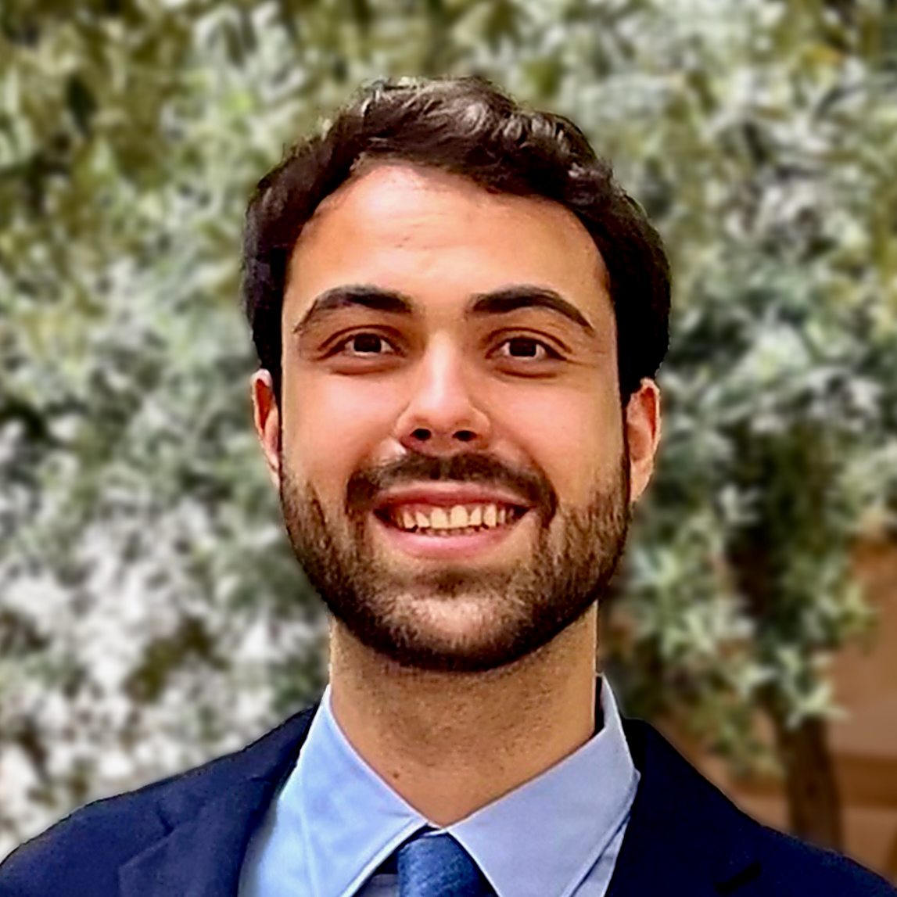
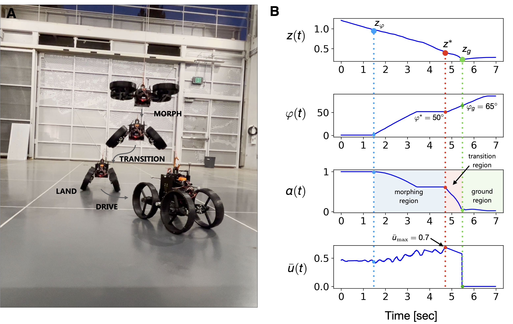

Ioannis Mandralis

PhD | Center for Autonomous Systems and Technologies | Caltech
About Me
I recently received my PhD from the Center for Autonomous Systems and Technologies (CAST) at Caltech, where I primarily work with Professor Morteza Gharib, and Professor Richard M. Murray. I am currently a Postdoctoral Researcher at EPFL working with Professor Mirko Kovac on multimodal aerial robotics.
I work on a broad range of topics all related to autonomy of robotic systems. My approach relies on using new tools from learning & control with an emphasis on applying them to hardware and bringing ideas to reality.
I am currently working on aerial robots with non-trivial morphologies and a particular emphasis on showcasing multi-modal behaviours that enhance terrestrial, aerial, and aquatic locomotion.
I am a recipient of the Onassis Foundation Scholarship.
Before Caltech, I earned my Master Degree in Mechanical Engineering and Robotics from ETH Zurich in 2020 and a Bachelor Degree in Mechanical Engineering from EPFL in 2018.
During my time at ETH Zurich, I was fortunate to work with Professor Petros Koumoutsakos on deep reinforcement learning for control of soft swimming bodies.
I have also spent 6 months working as a Robotics Software Engineer at Anybotics (ETH Zürich spinoff) in Zurich.
Here I developed novel parameter estimation algorithms to improve walking performance of the quadruped robot Anymal.
Research
Multi-Modal Robotics
Design and testing multi-modal robots, such as the Aerially Transforming Morphobot (ATMO), capable of dynamically switching between aerial and terrestrial locomotion modes.

Mid-air robotic transformation leads to unexpected aerodynamic effects which I analyze using aerodynamic experimental testing and rigorous theory.
The findings are used to inform the control algorithms for smooth transition behaviours.

Relevant Publications
-
Wake Vectoring For Efficient Morphing Flight
I. Mandralis, S. Schumacher, M. Gharib.
Under Review, 2026.
-
Quadrotor Morpho-Transition: Learning vs Model-Based Control Strategies
I. Mandralis, R. M. Murray, M. Gharib.
Published IEEE/RSJ International Conference on Intelligent Robots and Systems (IROS), 2025.
-
ATMO: an aerially transforming morphobot for dynamic ground-aerial transition
I. Mandralis, R. Nemovi, A. Ramezani, R. M. Murray, M. Gharib.
Published in Nature Communications Engineering, 2025.
-
Self-supervised cost of transport estimation for multimodal path planning
V. Gherold, I. Mandralis, E. Sihite, A. Salagame, A. Ramezani, M. Gharib.
Published in IEEE Robotics and Automation Letters, 2025.
-
Minimum time trajectory generation for bounding flight: Combining posture control and thrust vectoring
I. Mandralis, E. Sihite, A. Ramezani, M. Gharib.
Published in European Control Conference (ECC), 2023.
-
Demonstrating autonomous 3d path planning on a novel scalable ugv-uav morphing robot
E. Sihite, F. Slezak, I. Mandralis, A. Salagame, M. Ramezani, A. Kalantari, A. Ramezani, M. Gharib.
Published in IEEE/RSJ International Conference on Intelligent Robots and Systems (IROS), 2023.
Soft Robotics
For soft robots operating in fluid media the time variation of the body shape required to produce favorable behaviours are very complex to uncover using traditional control methods. I am working on using AI based methods for learning behaviours of such systems. An example is producing the maximum possible acceleration with a limited energy expenditure in swimming fish robots.

Soft aerial robotics for energetically efficient multi-modal flight. Currently developing a new concept for a flexible surface controlled by thrusters. Such a surface can improve agility and crash tolerance, while reducing energetic cost of locomotion. Have also worked on sensing methods using ultrasound for shape reconstruction of thin wires under large deformations.
Relevant Publications
-
Ultrasound Shape Sensing
A. Rosakis, I. Mandralis, M. Gharib.
US Patent Application, 2025.
-
Learning swimming escape patterns for larval fish under energy constraints
I. Mandralis, P. Weber, G. Novati, P. Koumoutsakos.
Published in Physical Review Fluids, 2021.
AI for Control
I am actively investigating how AI can be used for control in situations when the system dynamics are too complex to model and control with standard approaches, and also for robotic explorers with partial information.

Relevant Publications
-
Data Driven Modeling for On-Demand Flow Prescription in Fan-Array Wind Tunnels
A. A. Stefan-Zavala, I. Scherl, I. Mandralis, S. L. Brunton, M. Gharib.
Published in Flow, 2025.
-
Learning efficient navigation in vortical flow fields
P. Gunnarson, I. Mandralis, G. Novati, P. Koumoutsakos, J. O. Dabiri.
Published in Nature Communications, 2021.
-
Quadrotor Morpho-Transition: Learning vs Model-Based Control Strategies
I. Mandralis, R. M. Murray, M. Gharib.
Published IEEE/RSJ International Conference on Intelligent Robots and Systems (IROS), 2025.
-
Learning swimming escape patterns for larval fish under energy constraints
I. Mandralis, P. Weber, G. Novati, P. Koumoutsakos.
Published in Physical Review Fluids, 2021.
Talks
- Invited Talks at University of Wisconsin–Madison, Vanderbilt, and McGill University. February, 2026.
- Quadrotor Morpho-Transition: Learning vs Model-Based Control Strategies. Oral Presentation, IROS, Hangzhou, China, 2025.
- Invited Talk at the HiPeR Lab, University of California Berkeley April, 2025. Thank you Mark Mueller for hosting me!
- Thrust recapture for morphing aerial vehicles with out of plane thrusters. APS Division of Fluid Dynamics, 2023.
- Investigation of surface pressure fluctuations in airfoils subject to transverse gust: towards gust mitigation. APS Division of Fluid Dynamics, 2021.
Teaching
-
Optimal Control and Estimation (CDS112/Ae103b)
Caltech, Winter 2023. Professor: Richard M. Murray. -
Aerospace Control Systems (Ae103a)
Caltech, Fall 2023. Professor: Amir Rahmani (JPL). -
Control Systems II
ETH Zürich, Spring 2020. Professor: Roy Smith. -
Thermodynamics
EPFL, Spring 2017. Professor: Veronique Michaud. -
Analytical Mechanics
EPFL, Spring 2016. Professor: Philippe Mullhaupt.
Media Coverage
Caltech covered our work published in Nature Communications Engineering on its website (Caltech article) and on its YouTube channel:
We built a second version of ATMO (Aerially Transforming Morphobot) for our collaborators at the Technology Innovation Institute (Abu Dhabi). We demonstrated a package delivery mission in an outdoor environment. The result was covered by the TII media team. We also presented ATMO at IROS 2024 (Abu Dhabi). The robot was covered by the national television channel Sky News Arabia. See media coverage.
Our work on learning efficient navigation in vortical flow fields, published in Nature Communications, was covered by the media team at Caltech, and multiple other outlets. Engineers Teach AI to Navigate Ocean with Minimal Energy.